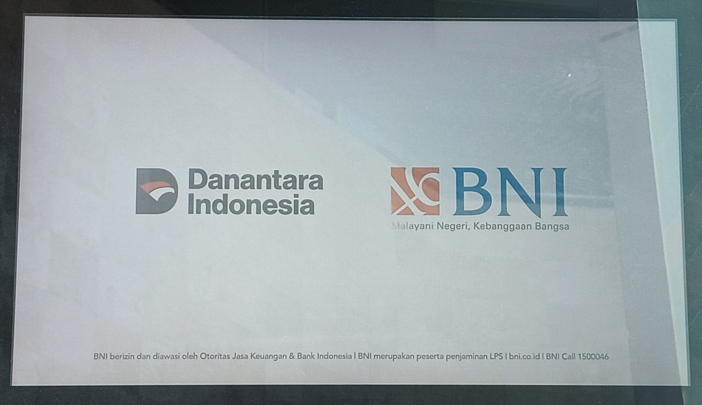

Panduan Buka Blokir Pin ATM
Untuk persyaratan siapkan KTP dan kartu debit yang telah terblokir.
Langkah 1: Klik Layar
Klik pada layar alat DigiCS untuk masuk ke menu selanjutnya.
Langkah 2: Pilih Bahasa

Pilih bahasa yang akan digunakan pada proses-proses selanjutnya.
Langkah 3: Pilih Menu

Pilih transaksi yang akan diinginkan, dalam hal ini pilih menu "Lupa Pin ATM".
Langkah 4: Pilih Menu Reset PIN

Pilih menu "Reset PIN Terblokir" untuk melanjutkan.
Langkah 5: Pindai KTP


Letakkan KTP seperti pada gambar kedua.
Langkah 6: Pindai Sidik Jari


Letakkan jari kanan atau kiri seperti pada gambar kedua.
Langkah 7: Masukan Kartu Debit


Masukan kartu debit seperti pada gambar kedua.
Langkah 8: Masukan Tanggal Lahir

Masukan tanggal lahir anda sesuai KTP.
Langkah 9: Buat PIN Baru

Masukan 6 digit angka untuk PIN ATM yang baru.
Langkah 10: Reset Berhasil


Selamat reset pin telah berhasil, silahkan menunggu kartu ATM anda keluar.
Video penggunaan DigiCS untuk reset PIN terblokir.